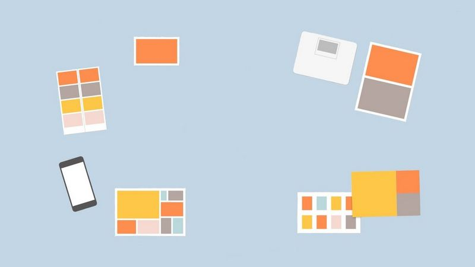

How to structure a website
Basic Layout
Choose a name and icon for your head
Create an
index.html
file
Every new file must have
.html
in the name
Create a new folder
CSS
and a file inside
styles.css
Files names must have small letters
Choose the fonts and structure on
styles.css
using
font-family:
Choose the colors for your fonts and apply on
styles.css
using
color: #999999;
Intermediate layout

Use
div<>
to split the structure and apply different layout to different parts. It could be applied to:
Headers
Paragraphs
Images
Top, Middle and Bottom Container
Use
span
to split the texts. It works as the Divs but for texts
Add a
class="name"
to the DIVS and select their styles to the elements in the
styles.css
The many different types
CSS
Selectors
Margin
: sets the distance to the border.
Margin: 1 value - All sides
Margin: 2 values - Top and bottom & Left and right
Margin: 3 values - Top, left and right, bottom
Margin: 1 value + auto - Top and bottom and centralized horizontally
Margin auto - Top and bottom margin 0 and centralized horizontally
Font-family
: it is better get it from
Google
cause it will allow the same font for all systems
From Google, you need to copy the link will all fonts to the head of the HTML
Copy the
font-family
to the tags you want
Google brings the font you want, and then the alternatives, it case they don't exist (font-family: 'Merriweather', serif;)
Color
: if it is for a tag it will probably change the text color. If it is in a DIV it's probably changing layout color
Padding:
It is the distance between the Border and the content
Font-size
: 100% = 16 px = 1em = 1 rem
If you have font-size in th body and in the headers, they'll sum, except for
px
and
rem
If you have
text-align
in the header and add a
font-size
, the last overwrites
To centralize it again, it needs to use
margin
(top, right, Bottom, left): 0 auto o auto
HR - Horizontal Rule:
One of the tags that helps to harmonize the layout
Border:
It is a block element, so
none border
can be used to create the line only
Height:
As it is a block element, 0 height will make it closer to a line
Border-top:
Dotted will give that 5 dots view
Color:
It will add more beautful elements to the website
Width:
It will show the lenght of the horizontal ruler, but % is the suggested
Border-width:
It shows the lenght where the rules will be distributed
text-align:
center will put the dots centralized
Position:
It helps to organize the elements
Relative: It position the items, one relative to the others. There is no overlap
Absolute: It brings the elements to where it is told, and it can overlap
Fixed: It keeps the element in the same place, even if you move in the screen
Display "None": Hides the element and the block
Visibility "hidden": hides the element but keeps its block position
Line-height:
2. It sets the space between the lines
Left/Right/Top/Bottom:
Moves the items to the directions
Text-Align:
Center/left/right. It moves the text
Width:
It relates to the element distribution along the line/block
Float:
It places elements side by side. But it is preferable to use margin/right/left
Clear:
Don't allow elements to be side by side
Display:
Helps to organize the structure, line inline
Background-color:
😎
2021 Amanda Atsumi